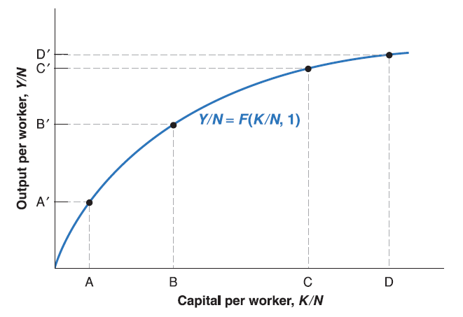
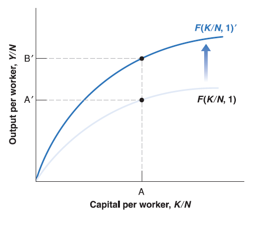
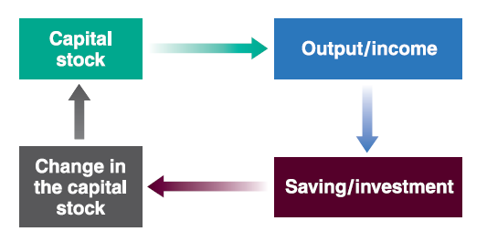

Mingze Huang
2021-08-05
In short run IS-LM model, we discuss the short run effects of demand side shocks (fiscal policy and monetary policy).
In medium run AS-AD model, we extend our analysis to supply side shocks (labor market condition and goods market competition).
There’s still one place we haven’t touch too much yet - the production function.
When we look back economic growth path for many countries, it’s hard to say that long run economic growth is driven by some temporary demand or supply shocks. 1950-2017
Recall the simplified version of production function we introduced before: \(Y^{r}=N\).
Now we extend our analysis to two inputs: capital \(K\) and labor \(N\): \[ Y=F(K, N) \]
Returns to scale and returns to factors
Constant returns to scale: if the scale of operation is doubled - that is, if the quantities of capital and labor are doubled - then output will also double: \(2Y=F(2K, 2N)\). Or more generally, for any number \(x\): \(xY=F(xK, xN)\).
Decreasing returns to capital: Given labor input unchanged, the increase in capital input will lead to smaller and smaller increases in output as the level of capital input increases.
Decreasing returns to labor: Given capital input unchanged, the increase in labor input will lead to smaller and smaller increases in output as the level of labor input increases.
By constant returns to scale \(xY=F(xK, xN)\), let \(x=\frac{1}{N}\), we have: \[ \frac{Y}{N}=F(\frac{K}{N},\frac{N}{N})=F(\frac{K}{N}, 1) \]
\(\frac{Y}{N}\) is output per worker, \(\frac{K}{N}\) is capital per worker.
Now we’ve convert capital into capital per worker \(\frac{K}{N}\) and hold labor as constant \(1\). Since we assume decreasing return to capital, the increase in capital per worker \(\frac{K}{N}\) will lead to smaller and smaller increases in output as the level of capital per worker increases.

Increases in output per worker \(\frac{Y}{N}\) may come from increase in capital per worker \(\frac{K}{N}\). This is so-called capital accumulation.
Increases in output per worker \(\frac{Y}{N}\) may come from improvement of state of technology (e.g. \(F(\cdot)\) to \(F(\cdot)'\). This is so-called technological progress.

To simplify notation, we’ll rewrite the relation as: \[ \frac{Y}{N}=f(\frac{K}{N})\equiv F(\frac{K}{N}, 1) \]
In year \(t\): \[\frac{Y_{t}}{N}=f(\frac{K_{t}}{N})\]

Recall in Lecture 4, we discussed composition of GDP (Y), and we get the IS-relation as below:
In equilibrium, investment always equal to saving: \(I=S+(T-G)\). This is so called IS relation.
To make the long run model simple enough, let’s ignore \((T-G)\) so that we have \(I=S\).